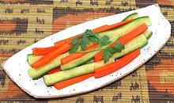

|
Vegetable PicklesEast Africa, Tanzania - Achali ya Mboga | ||||
| Makes: Effort: Sched: DoAhead: |
1-5/8 # * 3+ hrs Must |
This pickle is quick to make and serves well as an appetizer or with drinks. It will keep a few days in the fridge. | |||
|
14 14 ------- 2/3 2/3 1 2 ------- |
oz oz --- c c t --- |
Cucumbers (1) Carrot -- Pickle Lime Juice (2) Water Habanero (3) Salt --------------- |
MAKE - (15 min + 3+ hrs pickling time)
|